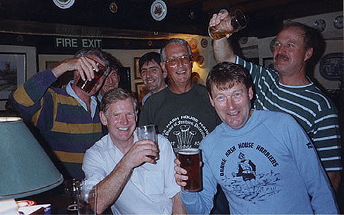

|
DRAKE'S PARENTS  From left to right: back row: Deadly (behind the beer), Cream Soda, Snakehips, IAT, Wimpers front row: Endosperm, Farting Ferret The picture shows some of Drake H3's oldest members. Sorry, I'll rephrase that, some of Drake H3's original members. The picture was taken on 23 November 1998 at the Skylark at Clearbrook on the occasion of Farting Ferret's last official run with Drake before he left to go to live in the south of France (no, it wasn't something we said that made him leave). These people were either with Drake right from the first run on 23 January 1984 or joined shortly thereafter. Thanks to them we have something which actually makes Mondays worth looking forward to! So here is a hash biography of Drake's parents: Deadly Deadly got into hashing through his friendship with Wimpers. Both were keen orienteers and so when Wimpers took up hashing with Tamar Valley H3 he invited Deadly along. Being a fanatical off-road runner, it didn't take very much tarmac to upset Deadly. When Tamar Valley H3 had a hash up on Dartmoor which consisted of a triangular run all on roads it was the final straw. Not being one to keep quiet about such things, he voiced his feelings in a very forthright manner, which, apparently, so upset the female hares that he and Tamar Valley parted company. He found his natural home with the newly formed Drake H3. It can be fairly said that through his outspokenness (his whingeing was legendary - see the hash mags!), he more than anybody is responsible for ensuring that Drake H3 runs are all off-road. Deadly was a very fast front runner and maintained this well into his fifties. Unfortunately, in 1998 injury caught up with him and he retired from running. It is rumoured that he has been seen out cycling and that he is hoping that one day he will be able to do without the stabilizers on the bike. THIS PAGE IS UNDER CONSTRUCTION
|